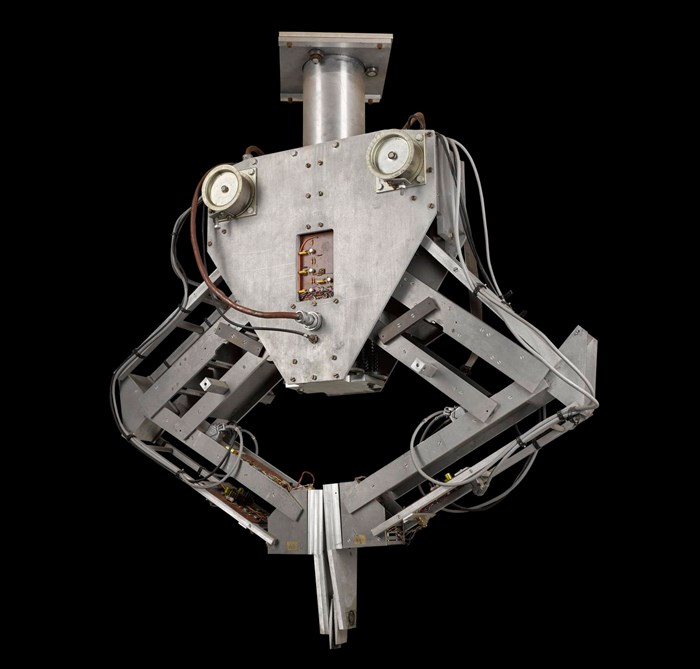

There are a number of different forms of learning as applied to artificial intelligence. The simplest is learning by trial and error. For example, a simple computer program for solving mate-in-one chess problems might try moves at random until mate is found. The program might then store the solution with the position so that the next time the computer encountered the same position it would recall the solution.
This simple memorizing of individual items and procedures—known as rote learning—is relatively easy to implement on a computer. More challenging is the problem of implementing what is called generalization. Generalization involves applying past experience to analogous new situations.
For example, a program that learns the past tense of regular English verbs by rote will not be able to produce the past tense of a word such as jump unless it previously had been presented with jumped, whereas a program that is able to generalize can learn the “add ed” rule and so form the past tense of jump based on experience with similar verbs.
To reason is to draw inferences appropriate to the situation. Inferences are classified as either deductive or inductive. An example of the former is, “Fred must be in either the museum or the café. He is not in the café; therefore he is in the museum,” and of the latter, “Previous accidents of this sort were caused by instrument failure; therefore this accident was caused by instrument failure.” The most significant difference between these forms of reasoning is that in the deductive case the truth of the premises guarantees the truth of the conclusion, whereas in the inductive case the truth of the premise lends support to the conclusion without giving absolute assurance.
Inductive reasoning is common in science, where data are collected and tentative models are developed to describe and predict future behaviour—until the appearance of anomalous data forces the model to be revised. Deductive reasoning is common in mathematics and logic, where elaborate structures of irrefutable theorems are built up from a small set of basic axioms and rules.
There has been considerable success in programming computers to draw inferences, especially deductive inferences. However, true reasoning involves more than just drawing inferences; it involves drawing inferences relevant to the solution of the particular task or situation. This is one of the hardest problems confronting AI.
Problem solving, particularly in artificial intelligence, may be characterized as a systematic search through a range of possible actions in order to reach some predefined goal or solution. Problem-solving methods divide into special purpose and general purpose..
A special-purpose method is tailor-made for a particular problem and often exploits very specific features of the situation in which the problem is embedded. In contrast, a general-purpose method is applicable to a wide variety of problems.
One general-purpose technique used in AI is means-end analysis—a step-by-step, or incremental, reduction of the difference between the current state and the final goal. The program selects actions from a list of means—in the case of a simple robot this might consist of PICKUP, PUTDOWN, MOVEFORWARD, MOVEBACK, MOVELEFT, and MOVERIGHT—until the goal is reached.
Many diverse problems have been solved by artificial intelligence programs. Some examples are finding the winning move (or sequence of moves) in a board game, devising mathematical proofs, and manipulating “virtual objects” in a computer-generated world.
In perception the environment is scanned by means of various sensory organs, real or artificial, and the scene is decomposed into separate objects in various spatial relationships. Analysis is complicated by the fact that an object may appear different depending on the angle from which it is viewed, the direction and intensity of illumination in the scene, and how much the object contrasts with the surrounding field.
At present, artificial perception is sufficiently well advanced to enable optical sensors to identify individuals, autonomous vehicles to drive at moderate speeds on the open road, and robots to roam through buildings collecting empty soda cans.
One of the earliest systems to integrate perception and action was FREDDY, a stationary robot with a moving television eye and a pincer hand, constructed at the University of Edinburgh, Scotland, during the period 1966–73 under the direction of Donald Michie. FREDDY was able to recognize a variety of objects and could be instructed to assemble simple artifacts, such as a toy car, from a random heap of components.
A language is a system of signs having meaning by convention. In this sense, language need not be confined to the spoken word. Traffic signs, for example, form a minilanguage, it being a matter of convention that ⚠ means “hazard ahead” in some countries.
It is distinctive of languages that linguistic units possess meaning by convention, and linguistic meaning is very different from what is called natural meaning, exemplified in statements such as “Those clouds mean rain” and “The fall in pressure means the valve is malfunctioning.”
An important characteristic of full-fledged human languages—in contrast to birdcalls and traffic signs—is their productivity. A productive language can formulate an unlimited variety of sentences.
It is relatively easy to write computer programs that seem able, in severely restricted contexts, to respond fluently in a human language to questions and statements. Although none of these programs actually understands language, they may, in principle, reach the point where their command of a language is indistinguishable from that of a normal human.
What, then, is involved in genuine understanding, if even a computer that uses language like a native human speaker is not acknowledged to understand? There is no universally agreed upon answer to this difficult question.
According to one theory, whether or not one understands depends not only on one’s behaviour but also on one’s history: in order to be said to understand, one must have learned the language and have been trained to take one’s place in the linguistic community by means of interaction with other language users.
in the end what about a Comparison?
This website was established by Muhammed Sayed AbdulAziz
B.N:724
in order to pass the computer course ECE001
Based on ENCYCLOPÆDIA BRITANNICA article
2020